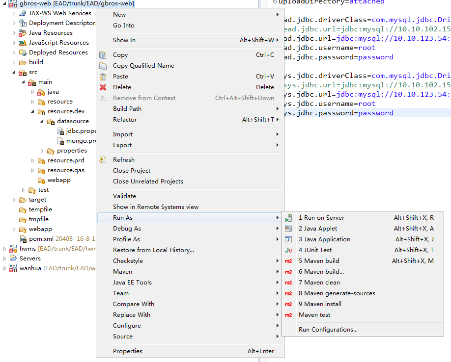
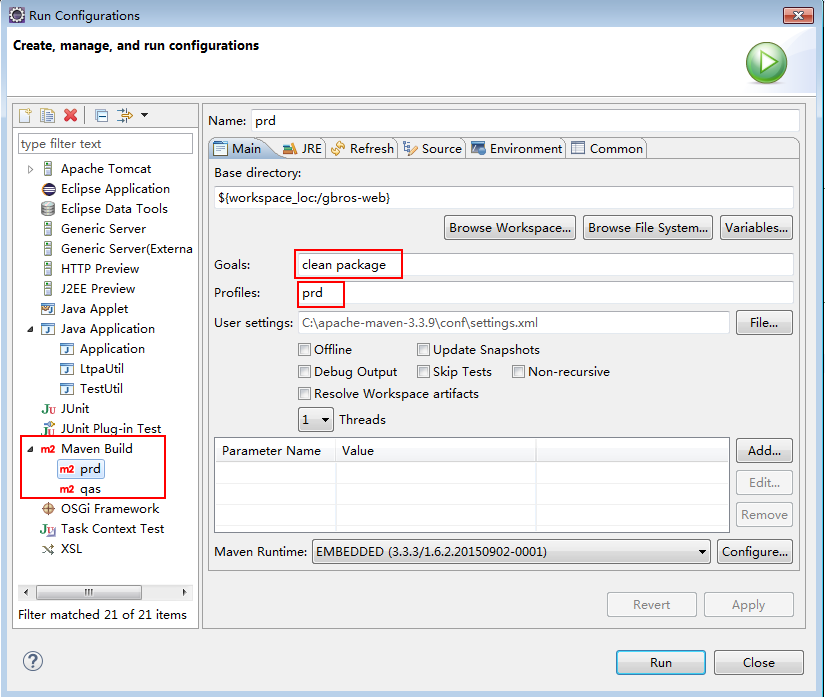

编译打包
打包时，在工程下，找到 pmo.xml，在 pmo.xml 代码上点击右键，选择 Run As > Maven Install;
注意：初次编译运行时，需要从 Maven 仓库下载 Jar 包，时间比较长，请耐心等待。

工程打包
单工程打包时，需要按依赖顺序依次进行打包：
1.gbros-hill
2.wanhua、hwms等业务应用
3.gbros-web
最后部署时，使用 gbros-web 工程打 war 包；
运行完成后，在 gbros-web > target 下查看打包好的 war 包，名称为：gbros-web.war

注意，若运行完成后未出现 war 包，则在工程上进行刷新后重新查看；

若在编译打包时发生错误，请先清理工程环境，然后再尝试；


gbros-web按不同环境打包
目前，支持按不同环境进行自动打包：dev、qas、prd。按以下步骤进行配置：


设置完成后，点击Run，打包时便会将相应环境的配置文件自动打到最终的war包中。